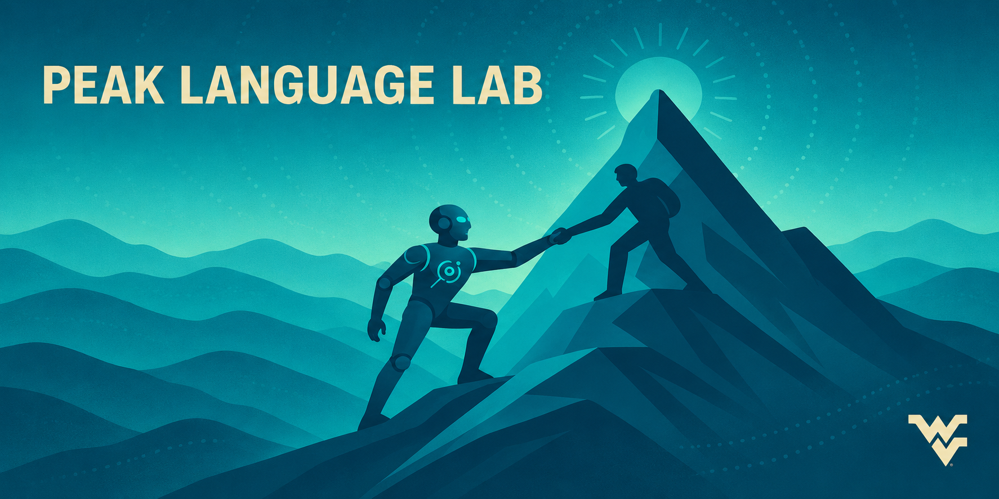

Conditioning Uncertainty on Epistemic Context in Human-AI Communication (PI)
Active, National Science Foundation: Robust Intelligence program.

PEAK Language Lab is a research group focused on Natural Language Processing and Computational Linguistics within West Virginia (the Mountain State)’s preeminent R1 university. The group’s current focus is on language modeling and its relation to Pragmatics, Epistemics, and Agency.
Active, National Science Foundation: Robust Intelligence program.
2025–2026, WVU Center for Foundational Neuroscience Research Pilot Project.